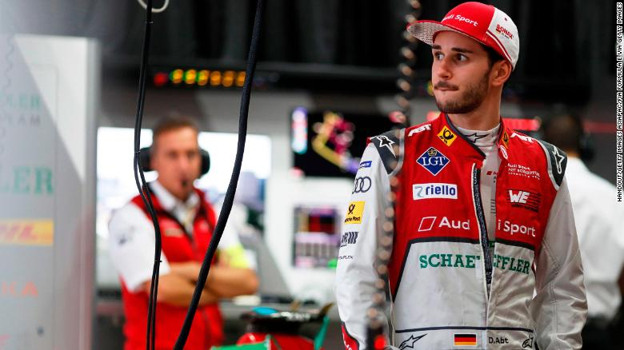

US Secretary of State Rex Tillerson dismissed as "laughable" on Friday reports that his job security is uncertain.
But rumours that the White House is considering a plan to replace him because of tensions with President Donald Trump have swirled in Washington DC for months.
In a tweet, Mr Trump categorically denied the rumours as fake news, saying Mr Tillerson was "not leaving". The State Department has said it is business as usual.
The media has been speculating that I fired Rex Tillerson or that he would be leaving soon - FAKE NEWS! He’s not leaving and while we disagree on certain subjects, (I call the final shots) we work well together and America is highly respected again!
instagram
Business
US stocks pare losses triggered by Michael Flynn reports
Syria war: Government takes half of Eastern Ghouta - report
fig2. Syria
Forces loyal to the Syrian government have reportedly taken half of the Eastern Ghouta - the last rebel-held enclave close to the capital Damascus.
Regime forces control more than 50% of Ghouta," Rami Abdel Rahman, head of the UK-based Syrian Observatory for Human Rights, told AFP news agency.
Aerial bombing killed at least 20 people as troops and tanks advanced.
In New York, the UN Security Council gathered to discuss the failure of a ceasefire it had demanded last week.
World
US stocks pare losses triggered by Michael Flynn reports
fig3. Stock price
Stocks on Wall Street closed lower on Friday, but pared the steepest losses triggered by reports related to an ongoing investigation of Russian influence in the Trump campaign.
Increased confidence that Congress is on track to pass a corporate tax cut helped to stem the declines.
The Dow Jones closed at 24,231.59, down 40.76 points or 0.17%.
The S&P 500 fell 5.4 points or 0.2% to 2,642.1, and the Nasdaq fell 26.39 points to 6,847.59
Sport
Daniel Abt celebrates maiden Formula E win at Hong Kong ePrix

fig4. Daniel Abt
Formula E: 'You never know what's going to happen'
It will be a birthday that Daniel Abt will never forget.
For most of his Formula E career he has watched his Audi Sport ABT Schaeffler teammate Lucas di Grassi take the plaudits, but at Sunday's Hong Kong ePrix it was Abt who stood tallest on the podium.
The German driver looked destined to finish runner-up in the second race at the opening weekend of the 2017/18 Formula E season as Edoardo Mortara, Venturi Racing's rookie driver, led the way for much of the race.